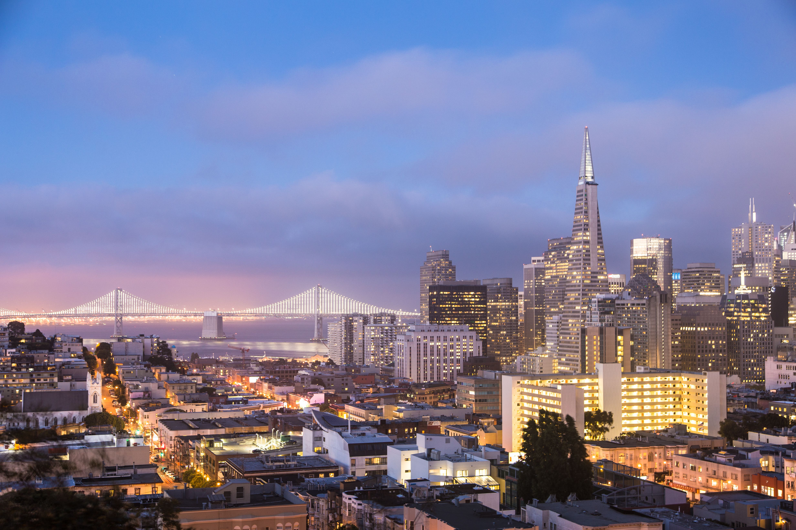
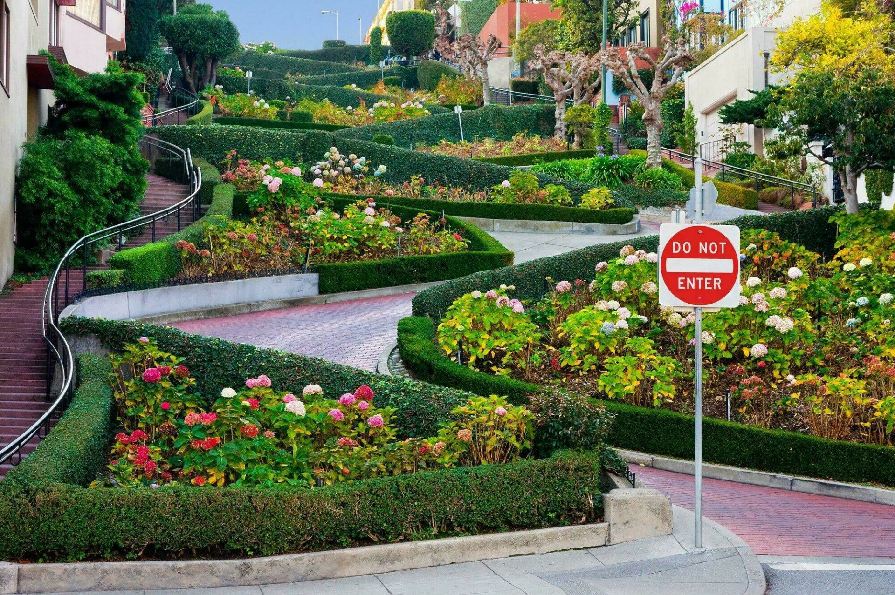

Bienvenido a San Francisco
Explora la ciudad de la bahía.
45
Atracciones turísticas
300
Restaurantes y bares
8.5/10
Calificación de los visitantes
150
Hoteles y alojamientos
Imprescindibles para Visitar San Francisco

Golden Gate
El icónico puente rojo que conecta San Francisco con el condado de Marin.

Alcatraz
La famosa isla prisión que ahora es un museo histórico.

Fisherman's Wharf
Una popular área turística con tiendas, restaurantes y vistas al mar.

Lombard Street
La calle más famosa de San Francisco, conocida por sus curvas cerradas.